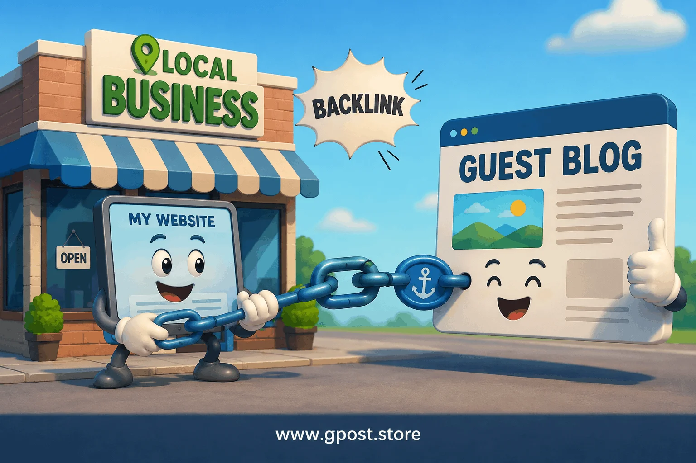
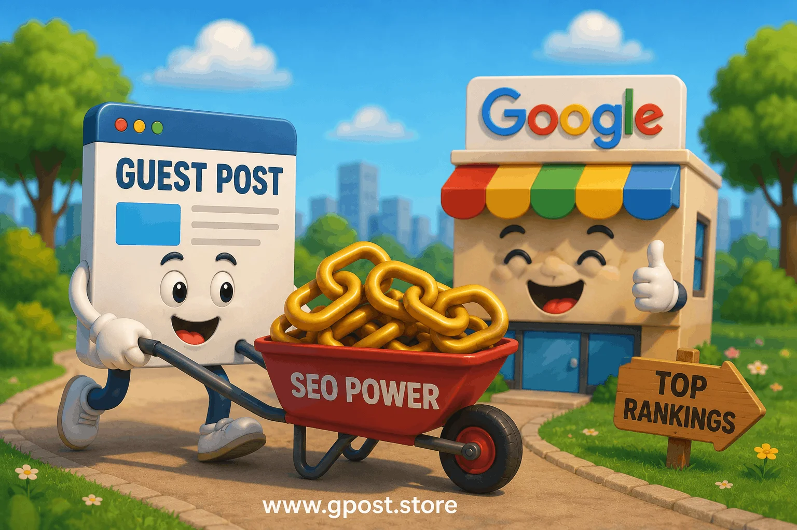
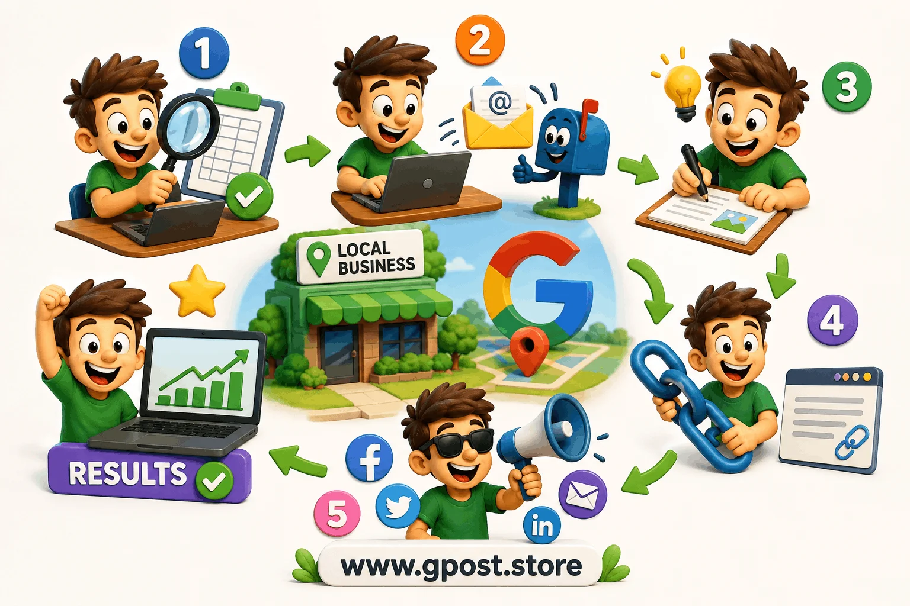

Local SEO Guest Posting Strategy: Smart SEO Growth Guide for 2026
Local SEO Guest Posting Strategy is one of the most effective ways to improve local search rankings, build authority backlinks, and increase targeted traffic in 2026. Many local businesses struggle to rank in Google search results because they lack high-quality backlinks and strong local relevance signals. A smart guest posting strategy helps solve this problem naturally.
Whether you run a small business, SEO agency, local service company, or niche blog, guest posting can help you gain trust, improve domain authority, and strengthen your visibility in Google Maps and organic search results.
In this detailed guide, you will learn how Guest Posting for Local SEO works, why it still matters, how to find opportunities, and how to build a safe long-term backlink strategy.

Local SEO guest posting helps businesses improve authority and rankings.
What Is Local SEO Guest Posting Strategy?
Local SEO Guest Posting Strategy is the process of publishing articles on relevant websites to earn contextual backlinks that improve local search visibility and domain authority.
These backlinks help search engines understand that your website is trusted within your industry and location. The more relevant backlinks you earn from quality websites, the stronger your SEO signals become.
Quick Answer
Local SEO guest posting is a white-hat SEO technique where businesses publish valuable content on niche or local websites to gain backlinks, referral traffic, and better local rankings. To understand whether this approach is fully compliant with search engine guidelines, you can read more about is guest posting white hat or grey hat SEO before planning your campaign.
Why Local SEO Guest Posting Strategy Matters
Backlinks remain one of Google's strongest ranking factors. Guest blogging helps websites gain natural authority signals while building relationships within their niche.
1. Builds High-Quality Backlinks
- Keyword rankings
- Organic traffic
- Domain authority
- Search engine trust
2. Improves Local Search Rankings
- SEO agency near me
- Best dentist in Chicago
- Roofing company in Dallas
3. Strengthens Brand Authority
When respected websites mention your business, it improves trust among both users and search engines.
4. Supports Google Business Profile SEO
Guest posting for google business profile seo can improve map rankings by strengthening local relevance and branded search signals.

Guest blogging helps businesses build local SEO authority naturally.
How Guest Posting for Local SEO Works
Guest Posting for Local SEO combines content marketing and strategic link building.
- Finding relevant websites
- Sending outreach emails
- Writing high-quality content
- Adding contextual backlinks
- Publishing and promoting articles
Google treats these editorial backlinks as trust signals. Businesses often combine this method with Guest Post Link Building strategies to strengthen topical authority and improve local rankings faster.
Types of Local SEO Guest Posting Strategy
Free Guest Posting
- Budget-friendly
- Safer long-term SEO
- Relationship building
Paid Guest Posting
- Faster placements
- Access to higher authority websites
Niche Guest Blogging
- Home improvement blogs
- Dental blogs
- Marketing websites
- Real estate websites
Local Community Websites
Local newspapers, city blogs, and business directories provide powerful local relevance signals.
Local SEO Guest Posting Strategy for Small Business
- Local blogs
- Community websites
- Local newspapers
- Industry directories
- Business association websites
What Small Businesses Should Avoid
- Spam backlinks
- PBN networks
- Irrelevant websites
- Cheap automated outreach
How to Find Guest Posting Opportunities
Use Google Search Operators
- "write for us" + local seo
- "guest post" + digital marketing
- "submit guest post" + small business
- "marketing blog" + guest author
Analyze Competitor Backlinks
- Ahrefs
- SEMrush
- Moz
- Ubersuggest
Studying successful outreach campaigns and reviewing a real Blogger Outreach Case Study can help you understand which backlink strategies actually produce rankings and traffic.
Use Social Media
- #guestpost
- #writeforus
- #seooutreach
Step-by-Step Local SEO Guest Posting Strategy
Step 1: Research Relevant Websites
- Website URL
- Traffic metrics
- Domain authority
- Contact details
- Niche relevance
Knowing how to qualify websites for guest posting is essential at this stage so you only target high-value placements that will genuinely improve your local SEO.
Step 2: Send Personalized Outreach
- Mention the website name
- Reference recent content
- Provide topic ideas
- Offer value
Businesses that scale campaigns efficiently often use professional Guest Posting Outreach systems to improve response rates and secure niche-relevant backlinks.
Step 3: Write Helpful Content
- Solve real problems
- Be easy to read
- Use proper formatting
- Include actionable advice
Strong content writing for guest posts is one of the most critical factors that determines whether your article gets accepted and whether it earns lasting SEO value.
Step 4: Add Natural Backlinks
- Keyword stuffing
- Spam anchor text
- Irrelevant linking
Step 5: Promote the Published Article
- Share on social media
- Add internal links
- Repurpose into short posts
- Include in newsletters
Best Local SEO Guest Posting Tips
Focus on Relevance
Use Diverse Anchor Text
- Branded anchors
- Generic anchors
- Partial-match anchors
- Naked URLs
Publish Original Content
Track Results
- Organic traffic
- Referral visits
- Keyword rankings
- Backlink growth

Small businesses can grow rankings through niche guest blogging.
Guest Posting for Google Business Profile SEO
- Local relevance
- Brand authority
- Entity recognition
- Map visibility
Best Practices
- Link to service pages
- Mention local areas naturally
- Use branded anchor text
- Focus on relevant websites
Common Mistakes in Local SEO Guest Posting Strategy
Buying Spam Backlinks
Ignoring Website Quality
- Organic traffic
- Content quality
- Spam score
- Indexation status
Over-Optimizing Anchor Text
Publishing Thin Content
Advanced SEO Tips for Guest Blogging
Build Topic Clusters
- Local SEO
- Backlinks
- Guest blogging
- Niche edits
- Domain authority
Use Internal Linking
Optimize Author Bios
- Professional expertise
- Business niche
- Relevant branded links
Is Local SEO Guest Posting Strategy Still Worth It in 2026?
Yes, absolutely.
- Content quality
- Niche relevance
- Relationship-based outreach
- User value
When to Avoid Guest Posting
- You want instant rankings
- You rely on automation spam
- You buy hundreds of backlinks
- You target irrelevant websites
Frequently Asked Questions
What is local SEO guest posting strategy?
Local SEO guest posting strategy is a method of publishing content on local websites to build geo-relevant backlinks, improve local rankings, and increase visibility in Google search results.
What is the main purpose of guest posting for local SEO?
The main purpose of local SEO guest posting is to gain high-quality local backlinks, improve Google Maps visibility, and strengthen authority within a specific geographic market.
What mistakes should I avoid in local SEO guest posting?
Avoid spammy sites, irrelevant niches, over-optimized anchor text, and low-quality content, as these can damage your local SEO performance and reduce trust signals.
What is the difference between local SEO guest posting and general guest posting?
Local SEO guest posting targets location-based websites for geo rankings, while general guest posting focuses on broader authority building without specific geographic targeting.
How do I create a local SEO guest posting strategy step by step?
Find local blogs, research geo keywords, pitch relevant topics, publish quality content, and build natural backlinks to improve local search rankings and authority.
What SEO strategy works best for local guest posting?
Use geo-targeted keywords, publish on niche-relevant local websites, and ensure backlinks are natural and contextual to improve local ranking signals and visibility.
How does guest posting help improve local search rankings?
Guest posting builds local backlinks, increases domain authority, and improves relevance signals, helping your website rank higher in local search and Google Maps results.
What tools are used for local SEO guest posting?
SEO tools like Ahrefs, SEMrush, and Google search operators help find guest posting opportunities and analyze competitor backlink strategies for better targeting.
How does guest posting increase authority and traffic in local SEO?
Guest posting drives referral traffic, builds trust through local backlinks, and increases website authority, leading to stronger visibility in local search results.
What is the future of local SEO guest posting in Google ranking algorithms?
Local SEO guest posting will remain important as Google prioritizes E-E-A-T, entity relevance, and high-quality local backlinks for long-term ranking improvements.
Conclusion
Local SEO Guest Posting Strategy remains one of the best ways to improve local rankings, build authority backlinks, and increase targeted organic traffic in 2026.
If you want to learn more advanced outreach and backlink techniques, explore our detailed guide on Guest Posting Services.